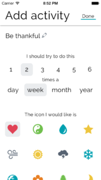
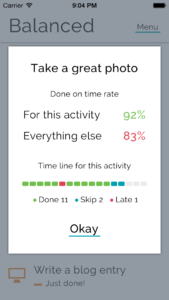

Getting More Balanced

During this setup is when I do the thinking about how much of my life I intend to devote to this thing and how I want to balance it with the other items in the list. Taking health and fitness as one example, I have three items in my list: "Play ultimate", "Go for a bike ride", and "Go for a walk". These have different frequencies. "Play ultimate" and "Go for a walk" are set to twice a week each. I don't ride my bike as often as I play ultimate or go for a walk, so it is set to three times per month. This is a good balance for me among the things that I like to do with my health and fitness free time. In the list of items, the thing Balanced thinks you should be doing next is always at the top. Right now, Balanced is reminding me to take the dog for her walk to the mailbox to check the mail, practice my tuba, and go for a bicycle ride. These three things are all doable today! Taking the dog to the mailbox is pretty simple. I have a bike ride scheduled with some friends this afternoon. I just need to go sit in my office for an hour with my tuba and work on some of the tricky passages in the music we're playing for this first concert of the season and then I'll have a pretty accomplished day! As I complete things, I swipe left-to-right to check them off. They fall to the bottom of the list waiting to bubble up again. If, for some reason, I'm not going to do something that's at the top of the list, I can swipe from right to left to skip it. This way, I don't end up with a bunch of things that are "Past Due" staring me in the face and making me feel bad about my life. So, if "Go for a bike ride" says "Do now" but I'm still recuperating from a rough game of ultimate, I can skip it. If I'm super busy with work stuff and can't go for a walk, I can skip it.
When I want to check in on a particular item, I just tap it in the list. Balanced shows me my success on the item and how it relates to my success on the other items in my list. It shows the title of the item, a balance score based on the number of times it has been completed on time, completed late, or skipped, and a timeline that shows a series of colored dots—green for done on time, red for late, and blue for skipped. In the upgraded version ($2.99 in-app purchase), Balanced's Life Pulse feature gives me a sense of how I'm doing with all the things I've put in. It will list the things to focus on more and also where I'm doing well. The Life Pulse graph provides a "balance line" indicating a 75% done on time rate. Life Pulse alone is worth the upgrade price. The other bits are nice (I like the disco mode theme and I have a passcode set.) but Life Pulse is the real value of the upgrade. Having a high level sense of how well I'm valuing things in my life is very helpful. So, what kinds of things are in Balanced for me? Playing ultimate, playing music (tuba, guitar), practicing magic, going for a walk, and calling loved ones that it's easy for me to go too long without talking to. I also have an entry to write on this blog and also to eat somewhere new. (I'm a creature of habit and it's easy for me to get stuck in a rut.) I also have current side projects listed as well. It's easy to let those slide for longer than I really want them to as busy days blur together into busy weeks. I'm circumspect about adding too many things to Balanced for worry of either becoming overwhelmed or adding phony-baloney things that shouldn't really be in here. Maybe I'll relax this in the future, but for now, things that go into Balanced are precious to me and significantly contribute to the person I want to be. The important thing, though, is that Balanced can support anything you want to put into it. Want to drink enough water throughout the day? Balanced can help. Want to cultivate a perspective of thankfulness or empathy? Balanced can help with that too. Anything you want to have a little bit of help giving the attention you deem it deserves, Balanced can help. Overall, I'm finding Balanced is just the right mix of reminders and information. I feel great about checking things off the list, and after a few weeks of using it, I feel great about the cocktail of important things it's helped me create. If in the future I find I'm skipping things or I start to get overwhelmed, it's simple to review the list and make adjustments to either the content or the ratios frequencies to keep myself living the life I want to live.